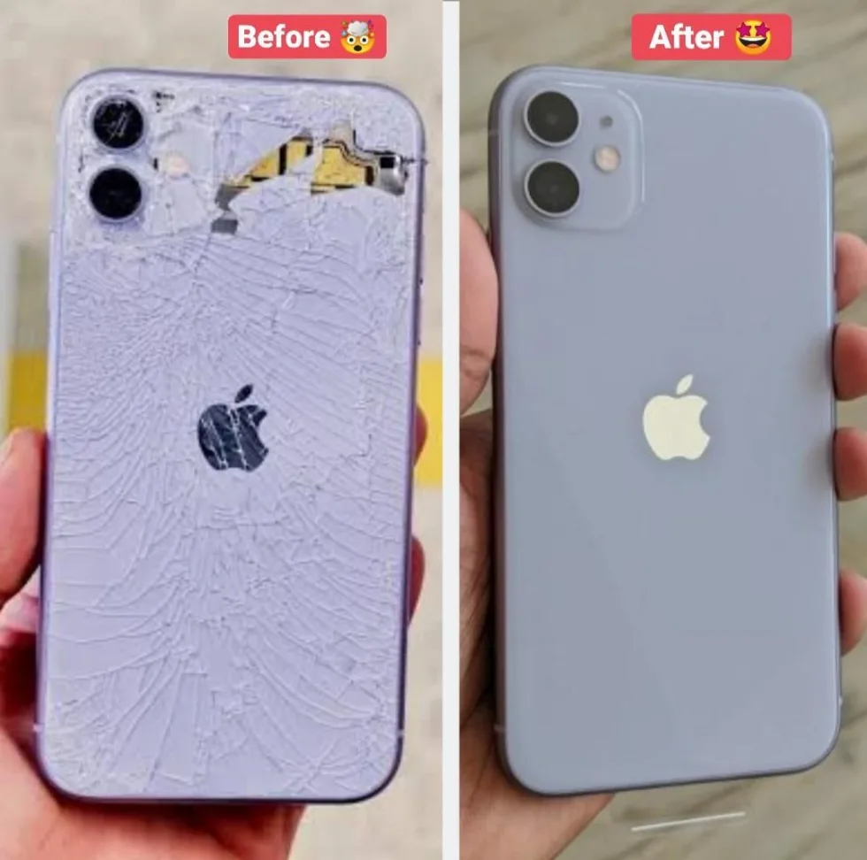

Wenn das Modell klar ist, geht es schneller.
Mit der richtigen Modellnummer kann ich Preis, Ersatzteil und Dauer viel genauer einschätzen.
Reparaturpreis ansehenWenn du beim Preis nicht sicher bist, wähle zuerst den Modell-Finder. Am sichersten ist die A-Nummer aus den Einstellungen, dem SIM-Fach, dem Anschluss oder der Rückseite.

Mit der richtigen Modellnummer kann ich Preis, Ersatzteil und Dauer viel genauer einschätzen.
Reparaturpreis ansehenSchick ein Foto vom Modellhinweis oder vom iPhone per WhatsApp. Du bekommst schnell eine klare Antwort.
Foto per WhatsApp sendenDanach wählst du auf der Preisseite die passende Reparatur. Die Verfügbarkeit bestätige ich vor dem Auftrag.
Zur Preisseite